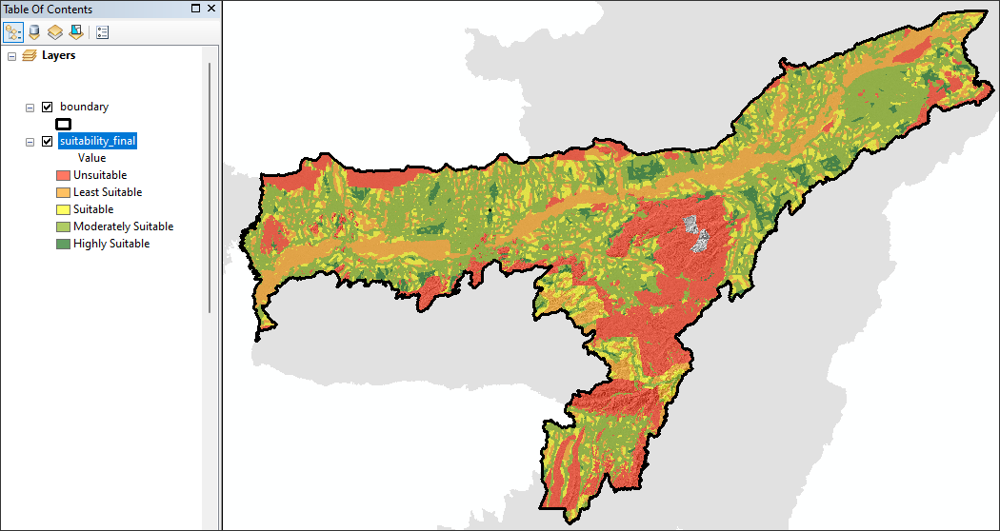
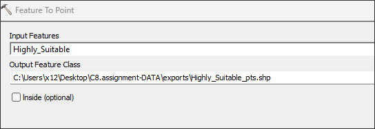

Preamble
In this eighth technical lab, we will complete any remaining steps of Monday’s demonstration lab then turn to steps necessary for the eighth assignment. These lab steps should be used extensively to aid with the completion of the eighth assignment due Sunday evening at 11:59pm.
Data
Location of Class 8 suitability inputs for download
To begin the assignment, download and access the assignment directory. Create a new assignment .mxd and connect ArcCatalog to the assignment directory:
All assignment data - including STRM_DEM_30M.tif raster - are already projected to the appropriate UTM Zone for the target geography.
Assignment Step 1
Input envelop, boundary, protected_regions, roads, water_polygons and water_polylinesinto the project .mxd.
With the features loaded, navigate to the top menu *Geoprocessing > Environments:
Next, set the following parameters for the project processing environment. Once complete, save the .mxd so that the parameters are set into the project .mxd:
- Output Location: The default location is
default.gdb; change this to theexportsdirectory in the assignment data directory:
- Processing Extent: Set the processing extent to the
enveloplayer. This will allow processing outwards to this polygon edge, but not further:
- No Pyramids: As default, pyramids are built with each raster geoprocessing step. However, they are not needed for this project so toggle OFF this default:
In the future, a project .mxd geoprocessing parameters can be tailored to the needs and specifics of a project and its processing tasks beyond the three parameters noted above.
Assignment Step 2 - Data preprocessing for the water features
In this step, the water features will be prepared in vector format, dissolved then rasterized in preparation for a Euclidean Distance output which is a Global processing function:
First, create BUFFER:
water_polylines Buffer = 15 meters

By creating a buffer for the water polylines, this will allow a polygon type to then be unioned with the water polygons. Further, but giving the water polylines some actual width, the creation of a rasterized representation will be made a bit easier (and accurate) at 15 meters.
Next, UNION the resulting water polylines buffer and the water polygons:
Next, within the water UNION result, create a dissolve and grid ID that will be used for both the dissolve process and the rasterization and distance geoprocessing steps forthcoming:
- Name:
grid_ID - Type: Short Integer
- Set the value in the field to
1with the Field Calculator
1Next, DISSOLVE the UNION utilzing the `grid_ID as the dissolve field:
1 as Dissolve FieldResult:
Assignment Step 3 - Rasterization + Euclidean Distance Surface for Water Features
With the water vector feature prepared, move to the rasterization and distance surface process. Here the vector feature for water will be first rasterized with a new cell size of 15 meters. Once complete, a distance surface from the rasterized water will be conducted.
First, RASTERIZE the water union feature. Use Search for Feature to Raster:
Parameters for the Feature to Raster tool:
- Input Features: the water-feature dissolve from step #2 above
- Field:
grid_ID(value = 1) - Output raster: exports >
water_15m.tif - Output cell size: 15 meters
Result:
With RASTERIZATION complete, move to the distance surface creation. Here distances will be assigned to each raster cell across the analysis surface outwards to 20,000 meters (the assigned stop distance).
Use Search for Euclidean Distance:
Parameters for the Euclidean Distance tool:
- Input Raster:
water_15m.tif - Maximum Distance: 20,000
- Output raster: exports >
water_distance_60m.tif - Output cell size: 60 meters
Surface tools and their resulting outputs can be very memory intensive. To save processing resources, the cell size is increased to a resolution of 60 meters; and a ‘stop’ distance is given of 20,000 meters. This distance is enough to cover the the full area outwards to the project boundary, but it doesn’t go much further into the bounding geometry feature - envelop which is perfectly fine for the assignment purposes.
Assignment Step 4 - Data preprocessing for the roads feature
With the distance surface complete for the water features, move along to a very similar process for the road feature.
Create the grid_ID for the roads features in the attribute table for this layer. When set, move to DISSOLVE.
Parameters:
- Name:
grid_ID - Type: Short Integer
- Set the value in the field to
1with the Field Calculator
DISSOLVE with Parameters filled for grid_ID:

Assignment Step 5 - Rasterization + Euclidean Distance Surface for Roads Features
Next, RASTERIZE the dissolved roads feature. Use Search for Feature to Raster:
Parameters for the Feature to Raster tool:
- Input Features: the roads dissolve
- Field:
grid_ID(value = 1) - Output raster: exports >
roads_15m.tif - Output cell size: 15 meters
Next, move to creating the Euclidean Distance Surface for roads.
Use Search for Euclidean Distance:
Parameters for the Euclidean Distance tool:
- Input Raster:
road_15m.tif - Maximum Distance: 20,000
- Output raster: exports >
roads_distance_60m.tif - Output cell size: 60 meters
Assignment Step 6 - Rasterization of Protected Regions
With both water and road features processed to distance surfaces, the next step is to rasterize the protected regions. This feature will be represented by a boolean logic where the true value is inside the protected region as 1 and a false condition of NoData. In this way, no suitability will be allowed to partake of the protected region 1 value.
Create the grid_ID for the protected regions feature in the attribute table for this layer. When set, move to DISSOLVE.
Parameters:
- Name:
grid_ID - Type: Short Integer
- Set the value in the field to
1with the Field Calculator
grid_ID assignment for Protected RegionsNext, RASTERIZE the dissolved protected regions feature. Use Search for Feature to Raster:
Parameters for the Feature to Raster tool:
- Input Features: the protected regions dissolve
- Field:
grid_ID(value = 1) - Output raster: exports >
protected_areas_60m.tif - Output cell size: 60 meters
Assignment Step 7 - Reclassification of Water Proximity Distances
With Rasterization and Euclidean Distance processing complete, continuous cell values for the various distances will be assigned. Here the goal is to produce meaningful, discrete ordinal scaling for suitability across the three input themes - water distances, roads distances and protected regions as a boolean condition true/false.
This process will involve a RECLASS whereby continuous cell values are returned as discrete integer categorical values when they met certain conditions. This process can be done several ways, including RECLASSIFY and a tailored equation constructed within RASTER CALCULATOR
To start, highlight the water_distance_60m.tif raster layer in the TOC and then search for Raster Calculator in Search:
Next, populate the RASTER CALCULATOR with the following equation for 10, 50 and 100 discrete suitability classes; export as water_class:
Reclassification Assignments:
0-1000m –> 10
1000 -5000m —> 50
5000m –> 100100*("water_distance_60m.tif">5000) + 50*("water_distance_60m.tif">1000)*("water_distance_60m.tif"<=5000) + 10*("water_distance_60m.tif"<1000)The result features the respective discrete classes:
Assignment Step 8 - Reclassification of Roads Proximity Distances
In this reclassification, the ordering of the ordinal values will be reversed. Here ‘closeness’ is an opportunity, whereas in water ‘closeness’ is a constraint:
Reclassification Assignments:
0-1000m –> 100
1000-5000m –> 50
5000m –> 10
100*("roads_distance_60m.tif"<=1000) + 50*("roads_distance_60m.tif">1000)*("roads_distance_60m.tif"<=5000) + 10*("roads_distance_60m.tif">5000)
The result features the respective discrete classes:
Assignment Step 9 - Suitability Combination
With all discrete raster outputs complete for water distance, roads distance and protected regions, the next step is to create a combination layer. Again the RASTER CALCULATOR can be used for this process.
To start, we will need the snap our results to the state boundary. This can be added to our equation, but first we need to RASTERIZE the boundary layer using the same grid_ID process as with prior layers:
Parameters for the Feature to Raster tool:
- Input Features: boundary feature
- Field:
grid_ID(value = 1) - Output raster: exports >
boundary_r.tif - Output cell size: 60 meters
Next, before proceding to the combination equation, the protected areas raster produced previously is currently classed as 1 inside protected areas; and NoData in any area outside protected areas. But for the combination equation, we need to turn the NoData values into the boolean value 0. Here we will use the RECLASSIFY tool:
Search for Reclassify in Search:
Parameters for the Reclassify tool:
- Input Features:
protected_areas_60.tif - Reclass Field:
VALUE(this is the default) - Output raster: exports >
pro_areas_rc.tif - New Values: Old
NoDatabecomes0in New Values
With the final boundary and protected regions fully processed, the combination for suitability is now ready. Populate the RASTER CALCULATOR with the following equation:
("roads_class" + "water_class")*("pro_areas_rcl" != 1)*("boundary_r")For the final suitability thematic, the following suitability matrix will be applied to the map:
Suitability Matrix:
| Cell Value | Definition |
|---|---|
| 0 | Unsuitable |
| 20 | Least Suitable |
| 60 | Least Suitable |
| 100 | Suitable |
| 110 | Moderately Suitable |
| 150 | Moderately Suitable |
| 200 | Highly Suitable |
As there are duplicate classes for both Least Suitable and Moderately Suitable, we can run one final reclassification via RECLASSIFY to merge cell values 20 and 60 to value 50; and cell values 110 and 150 to value 150:

Assignment Step 10 - Preparation for Cartographic Design - Hillshade Surface
With the bulk of the suitability now complete, we will utilize a raster surface function known as hillshade to augment the design process:
Multidirectional hillshade improves terrain visualization. It combines light from six different directions to represent an enhanced visualization of the terrain and to improve the appearance of regions with low relief. It improves the balance between the overexposed and shadow areas of the map. The output is suitable to use as a relief backdrop for topographical, soil, hydrological, land cover, or other thematic maps in which the data will be enhanced with topography.
To start, import the raster layer STRM_DEM_30M.tif. This layer is 30 meter resolution Digital Elevation covering the Assam state boundary.
Search for Hillshade in Search:
Parameters for the Hillshade tool:
- Input Features:
STRM_DEM_30M.tif - Z factor:
1(this is the default) - Output raster: exports >
hillshade - Accept Azimuth and Altitude Defaults

suitability_finalAssignment Step 11 - Preparation for Cartographic Design - Final Suitability Selection
At this juncture, the Highly Suitable class is obviously dispersed through the project area. To subset to a final suitability, a total square area criteria is often applied to the suitability model. Here a site requirement is typically a threshold between the lowest and highest optimal areal size for a particular land use, project or development. Here we will assume a project site needs at least 800 acres, but not more than 1000 acres. We will make these selections in the vector model and show the results in the cartographic output as vector features atop the final suitability result.
To start, RECLASSIFY the final suitability layer to isolate just those cells in the 200 class, and save the result as HS for high suitability. Here all values that are NOT the 200 class become NoData; the 200 class then becomes 1:
suitability_finalNext, search for, then utilize the Raster to Polygon tool. Input the reclassed HS raster layer, outputting the vector polygon features as HS_vector:
Within the newly created HS_vector layer, create a new field ACRES and then Calculate Geometry within the field, with Units specified as Acres US [ac]:
Acres as Type DoubleAcres US (ac)With the Areal, Units as Acres US complete, move to Select by Attributes for the threshold values between 800 and 1000 acres:
"ACRES">=800 AND "ACRES"<=1000
HS_vectorSelection Result:
Next, export the selected features:
HS_vector as Highly_Suitable.shpOnce exported, search for, then utilize,the Feature to Point tool to transform the Highly Suitable polygon features to points features as Highly_Suitable_pts.shp:



With Final Suitability Selection complete, move to the final cartographic design for the deliverable to follow:
Map layout & Deliverable:
To development the final map design, utilize the map example PDF below to help guide your process. Here the baselayer for the main map frame is the hillshade layer; the raster suitability has 45% transparency applied to the layer; and the points features are symbolized for optimal legibility of both the highly suitable site locations, but also the underling raster suitability which has been thematically mapped.
Final map layout will include the following elements on either a 11x17” or 8.5x11” Portrait 300 DPI:
- Main map frame featuring your cartographic output with thematic design
- Orientation inset map situating the Indian State of Assam relative to Country of India.
- A map title
- Legend representing each suitability category
- Legend vector feature representing the final high suitability criteria
- Data source & Author tag
Example Layout - Assignment 8 Utilize the following map example to guide your design process: